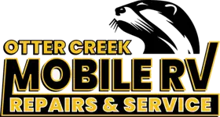
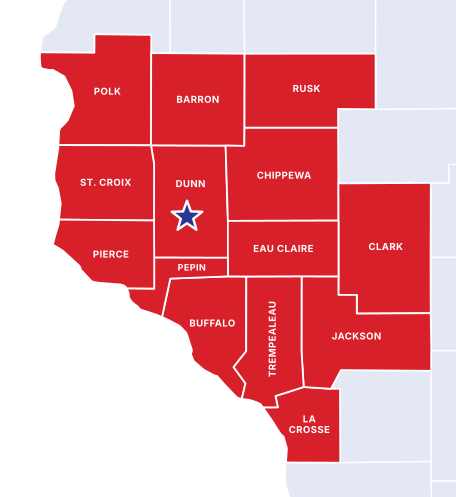

Repair & Diagnostics
Find the real problem fast. Troubleshooting for systems that won't work and issues that keep coming back.
Request service →
Otter Creek Mobile RV Repairs & Service
On-site RV repair, diagnostics and seasonal maintenance at your campsite, driveway or storage lot. No towing, no hauling, no lost weekend.
Our services
From a leaky roof to a dead fridge, Jeremy diagnoses and fixes it on-site with a fully stocked service vehicle.
Find the real problem fast. Troubleshooting for systems that won't work and issues that keep coming back.
Request service →Fridges, furnaces, water heaters, converters, batteries and wiring: troubleshot and repaired.
Request service →Leaks, seals, roof repairs and structural fixes before small damage becomes expensive damage.
Request service →Spring de-winterizing, fall winterizing and inspections so your season starts and ends right.
Request service →How it works
Call or fill out the form. We'll talk through the issue and your location.
Pick a time that works. Campground, driveway or storage lot, we'll meet you there.
Diagnosis and repair with a stocked service vehicle. Bigger jobs can move to the shop.
Simple, upfront pricing
One flat fee covers your diagnostic, travel and the first hour of labor. After that, every hour is the same clear rate.
Who we serve
RV owners, campers, travelers and seasonal residents across western Wisconsin. Whether you're at a campground, parked at a storage facility or in your own driveway, we bring the repair to you.
Jeremy High runs the business personally: quality workmanship, reliable scheduling and a customer-first approach on every job.
Request a quote today and get your RV season started.
Service area
We provide professional mobile RV repair across 14 western Wisconsin counties, including Dunn, Eau Claire, Chippewa, Barron, Polk and St. Croix. We come to your campsite, driveway or storage lot.
Type a town to check. Not listed? Call or text us, we may still come to you.

Frequently asked questions
A flat $120 service/diagnostic fee covers travel and the first hour of labor. After that it's $120 per hour. Parts and materials are billed separately.
Yes. We work at campgrounds, storage facilities and home driveways around Menomonie and western Wisconsin.
We offer emergency roadside assistance when feasible. Call us and we'll tell you honestly what we can do.
Yes. Seasonal maintenance includes spring de-winterizing, fall winterizing and inspections, done at your campsite, driveway or storage lot.
Yes. We handle roof repairs, seals and leaks, plumbing problems and structural fixes, plus appliance and electrical troubleshooting.